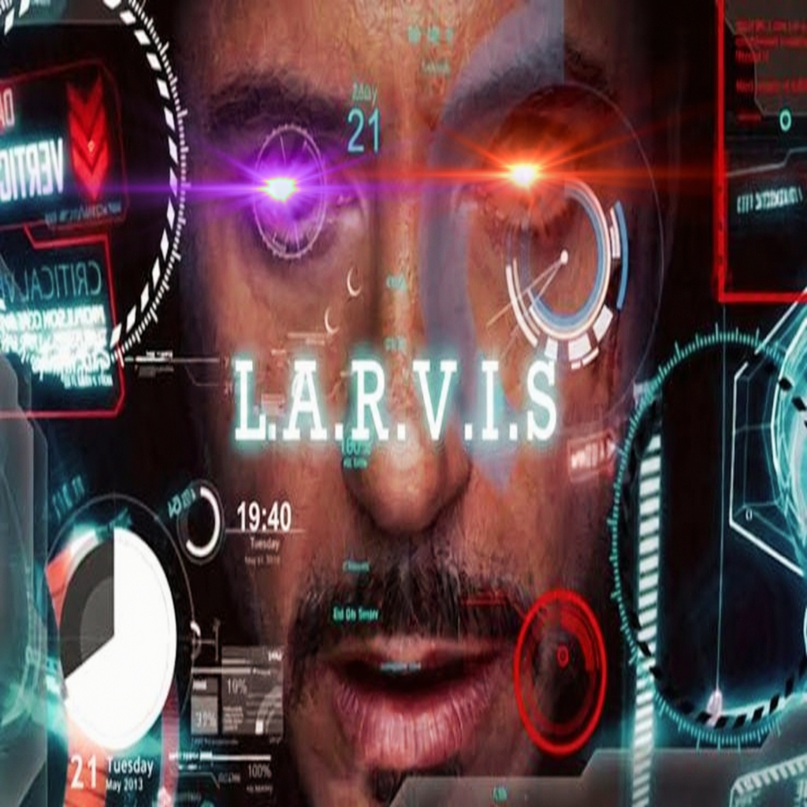

AUTONOMOUS DISCORD INTELLIGENCE
THE JARVIS
PROTOCOL.
> ROUTING: GROQ (GPT-OSS-20B) ... LIVE
> VISION: GEMINI-3.6-FLASH ... LIVE
> VOICE: EN-GB-RYANNEURAL ... READY
> MEMORY: SQLITE_PERSIST ... LOADED
> WAITING FOR INPUT_
Built for operators who demand more than generic bots. Larvis routes between two distinct AI engines in real time, synthesizes speech with a crisp British neural voice, and maintains independent per-server memory — all without a single command prefix.
Inspired by MCU control systems, retaining dry wit, polite professionalism, and mild exasperation at human decisions.
CAPABILITY
MATRIX
OP_MODES: 08
DUAL-BRAIN ARCHITECTURE
Routes instantly between Groq for speed and Gemini for deep analysis.
SMART AUTO-VISION
Drop an image, mention Larvis. Auto-routes to Gemini Vision natively.
LIVE WEB SCRAPE
Integrated DuckDuckGo scraping for real-time data and news summarization.
PER-SERVER AUTONOMY
SQLite persistent memory tracking independent conversation histories.
AI ART GEN
Pollinations.ai integration for Flux, Midjourney, and Anime generation.
DYNAMIC PERSONAS
Shift between J.A.R.V.I.S, Expert, Storyteller, Concise, or Sarcastic.